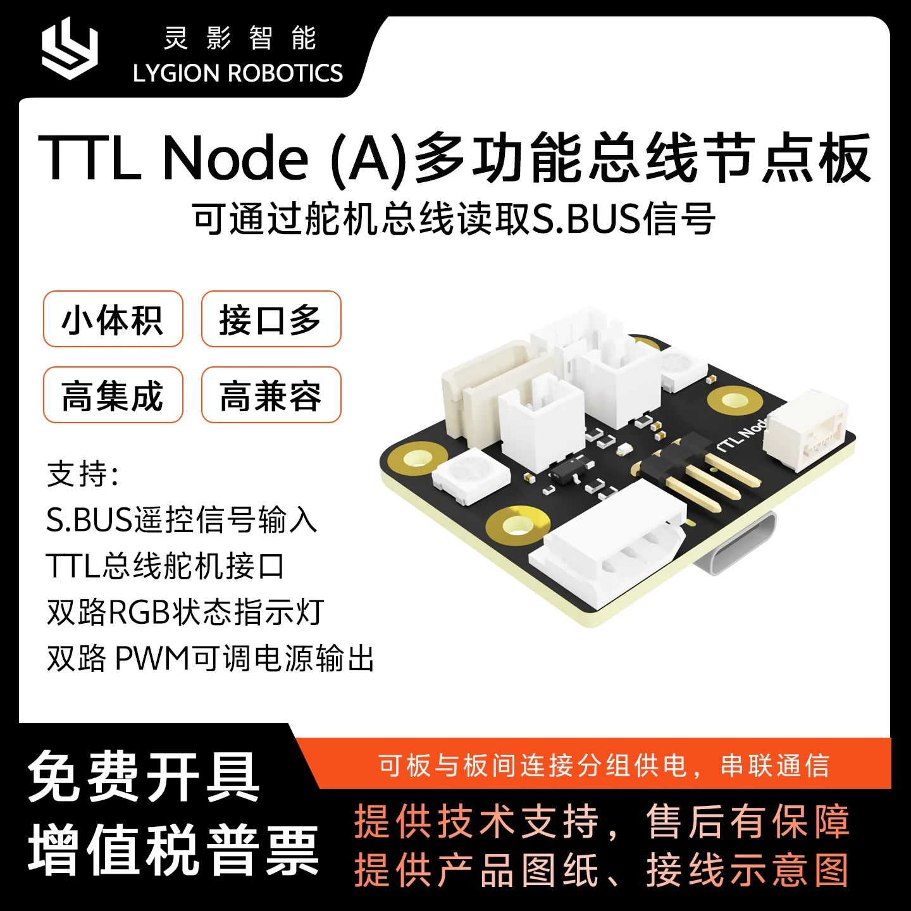
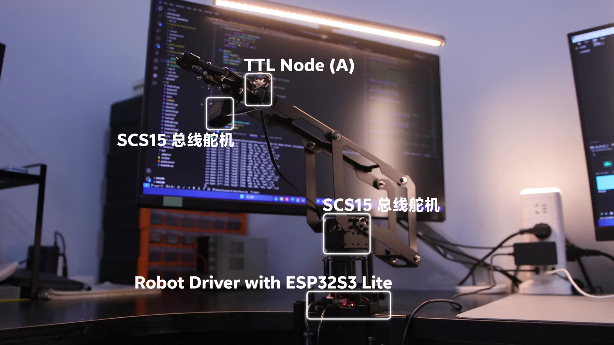
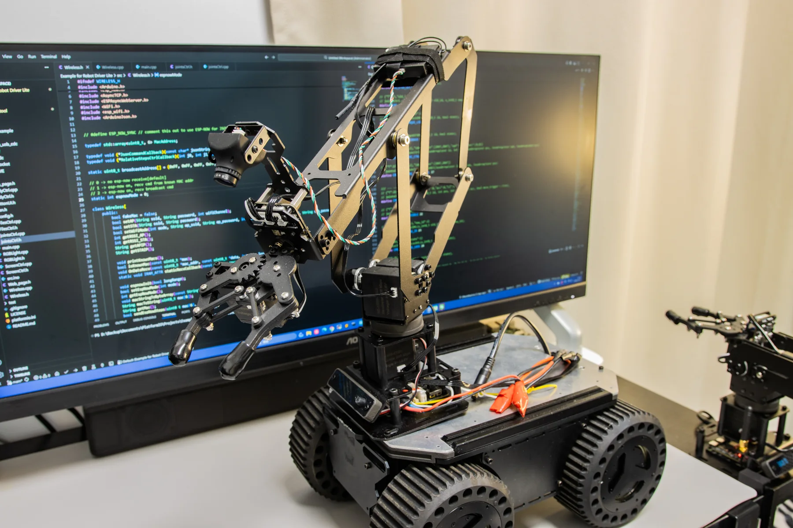
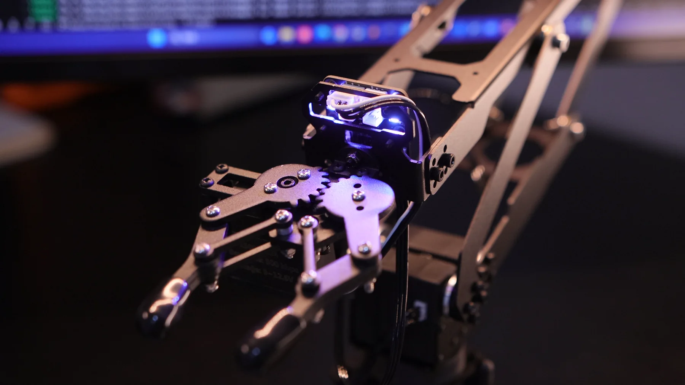

遥控输入进总线
通过 S.BUS 接口读取航模接收器通道数据，让遥控器可以进入同一套控制链路。
适合遥控机器人WHAT IT SOLVES
很多机器人项目不只需要舵机通信，还需要遥控输入、状态指示、辅助供电和调参入口。TTL Node (A) 把这些零散需求集中到一块小板上，减少额外模块和线束。
通过 S.BUS 接口读取航模接收器通道数据，让遥控器可以进入同一套控制链路。
适合遥控机器人USB Type-C 可直连上位机，用于搜索设备、改 ID、改波特率、测试功能和读取状态。
上手更快两路 RGB 状态灯可以显示运行、告警、模式或交互状态，让机器人更容易调试。
看到系统状态双路 PWM 可调输出适合给简单外设做辅助控制，减少额外小板和飞线。
集中管理外设CORE FUNCTIONS


BUS INTEGRATION
TTL Node (A) 可以作为上位机调试入口，也可以通过 TTL Adapter (A) 加入总线，或接入 Robot Driver with ESP32S3 Lite 由嵌入式程序控制。多个节点与总线舵机共线时，需要先规划好设备 ID。
EASY TO START
TTL Node (A) 的使用门槛低，是因为它的常用功能都能先用软件或例程验证：S.BUS 输入、RGB 状态灯、PWM 输出、电压读取和 ID 修改都能按步骤检查。
先用 USB Type-C 连接 PC，打开 FD 软件搜索设备，确认 ID、波特率和在线状态。
读取 S.BUS 通道，点亮 RGB 状态灯，调整 PWM 输出，读取总线电压，把每个功能单独验证清楚。
多块节点或总线舵机共线前先设置不同 ID，再用 Python / C++ / Arduino 例程接入实际项目。
FD SOFTWARE
Node 的功能多，但不需要一次性写完整程序。先用 FD 软件和例程验证单项功能，再组合到机器人控制逻辑里，能显著降低调试难度。
APPLICATIONS




SPECIFICATIONS
SHOOTING CHECKLIST
Node 的功能比较多，最需要用真实场景把“它为什么存在”讲清楚。下面清单按宣传优先级排列。
白底平铺，所有核心配件一眼可见，用于首屏和产品列表图。
拍出它作为“功能节点”的位置，而不是只展示裸板。
接收器、2.54mm-3P 接口、遥控器同框，突出遥控输入。
建议拍 2-3 种颜色状态，可用于展示调试反馈。
选择小风扇、灯带或末端小外设，展示“辅助输出”的实际用途。
线材走向清楚，设备 ID 标签可见，适合说明系统集成方式。
DOCUMENTATION
页面正文只保留购买和理解产品最需要的信息，详细开发步骤交给 Wiki。